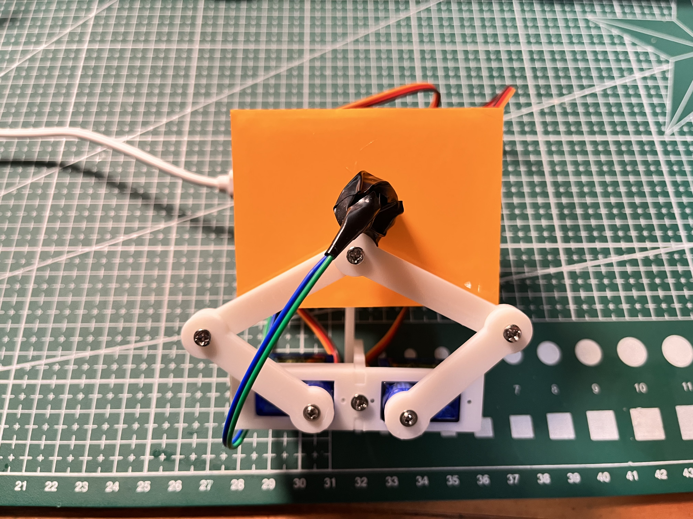
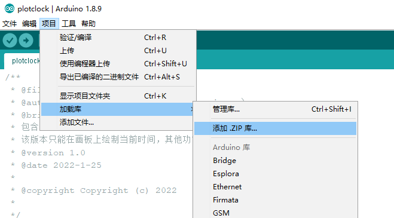
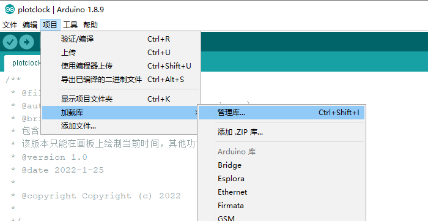
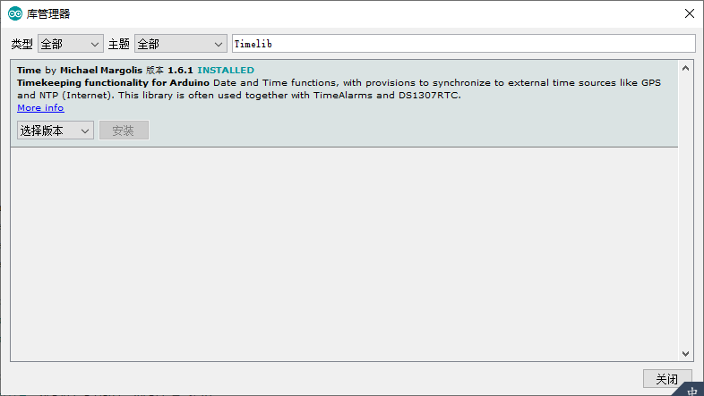

This is the blog of Plotclock, as for The Astral Movement Clock.
Overview
In this repository, I use 3D printing to realize the shell design of the luminous clock, and use arduino to program it, so that the servo can erase the luminous numbers, which is very fun and cute.
Different from the original three servo design, the UV light is used instead of the traditional oil-based pen, which reduces the fragrance of pen and ink, but adds a lot of charming light pollution.
Requirements
- Arduino IDE
- Ardino Nano V3 * 1
- DS3231 * 1
- SG90 * 2
- UV Light Emitting Diode * 1
- Luminous sticker 10cm*15cm * 1
- Bracket (3d printed)
How to use
Hardware assembly
The servo bracket is from the open source 3d model website thingiverse, and the redundant third servo part is removed, see model.stl file:
hardware connection
- A5 <---------> DS3231-SCL
- A4 <---------> DS3231-SDA
- D6 <---------> left steering gear
- D5 <---------> right steering gear
- D12 <---------> LED
Import related libraries
DS3231.h
In the Arduino IDE, select Project - Load Library - Add zip, and add the DS3231.zip file in the project to install.
The default library function A4 corresponds to SDA of DS3231, and A5 corresponds to SCL of DS3231
(The original library function link http://www.rinkydinkelectronics.com/library.php?id=74 ) Some modifications have been made, and some in-class functions have been added.
Timelib.h
In the Arduino IDE, choose Project - Load Libraries - Manage Libraries
Search for Timelib in the library manager and install the first library that pops up.
Run code
Open plotclock.ino and adjust the relevant model parameters according to the comments. For the first time, please enable the debugging mode, that is, remove the ADJUST comment to debug the position of the servo arm, and remove the GPIO to debug the light-emitting diode.
#define normal_mode // 开启正常模式
//#define ADJUST // 开启调试模式
//#define GPIO // 开启调试模式
//#define extra_mode // 开启额外模式